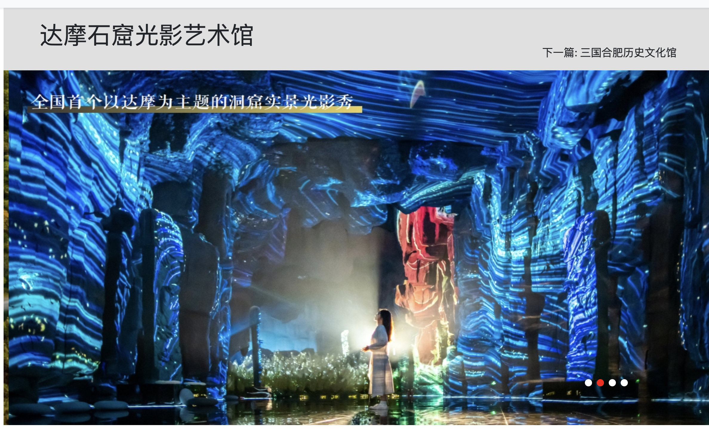
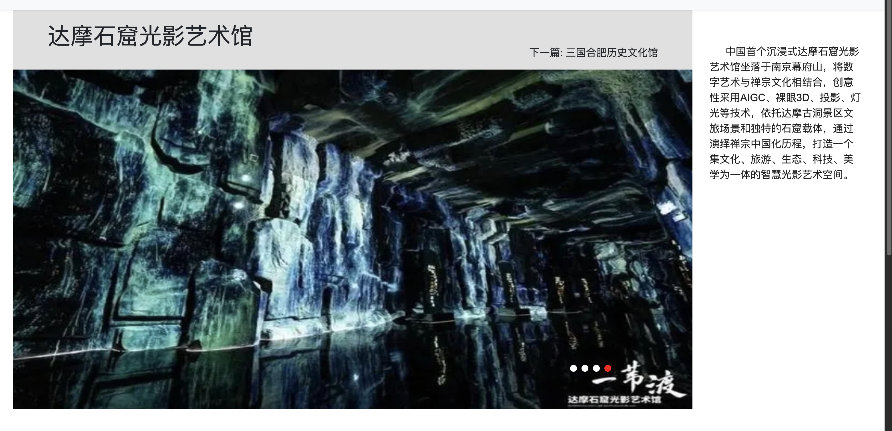
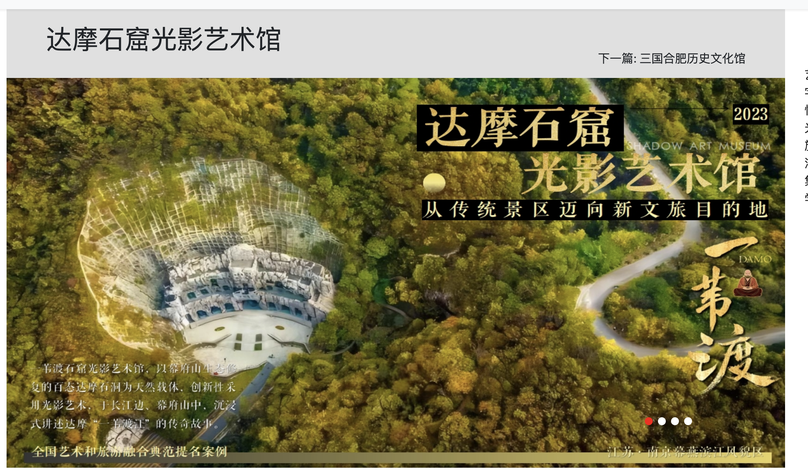

Lighting & spatial design
Lighting placement, calibration and the relation between physical surfaces and visual content.
Immersive installation
Lighting / Projection / Spatial design

At Fengyuzhu, I worked on the lighting, projection and spatial design of an immersive environment in 2023.
At Fengyuzhu, my responsibilities included lighting layout and calibration, projection content and equipment, on-site integration and spatial design. The CAVE project involved multi-channel projection fusion, wall-based touch control and radar recognition.
I’m now exploring gestures and body movement as ways to interact with this space: changing the light, opening another scene, or leaving a fleeting trace on the floor.
Enter the experience ↗Lighting placement, calibration and the relation between physical surfaces and visual content.
Projection content and equipment, multi-channel fusion and on-site system coordination.
Wall-based touch control and radar recognition within the CAVE immersive-system project.


Project imagery and film: Fengyuzhu, 2023. The Experience view contains my later web interaction experiments.
移动，让光与地面回应你。
查看原片 / Watch the 2:23 film ↗
移动，让莲花沿着路径绽开。
移动鼠标，调整石壁投影的明暗。
摄像头画面仅在本地处理。小人上的虚线表示未识别到的部位。
也可以用滑杆调整光强和裂缝。
支持这些中英文场景指令。
语音识别可能使用浏览器的云服务；键盘输入在本地处理。
MediaPipe tracking, gesture mapping and Canvas rendering.
MediaPipe detects 21 hand landmarks or 33 body landmarks. Position smoothing reduces jitter; mouse control remains available.
position · pinch · presenceHand and torso positions modulate projection brightness. A pinch and sideways pull opens the image; arm spread controls it in Body mode. Ground effects respond to the movement path.
position · pinch · arm spreadCached exposure layers adjust the brightness of the stone’s existing projection. A split-and-warp effect opens the walls. Perspective-mapped lotus, water ripples and koi occupy the floor.
light · motion · aperture · memoryInput position, opening and light energy from the current interaction.
Ground effects stay in this session and can be reset. No camera recordings are stored.
I’d like to extend these interactions into VR and AR/MR, with gestures linked to the geometry of the physical space.
A virtual environment viewed through a compatible headset. Reconstructing the actual venue for VR requires additional 3D geometry and device validation.
Digital elements aligned with a physical place. A future visitor could reveal hidden layers of the cave with glasses or a phone.
A shared physical environment augmented by light. This project starts with spatial design, projection and sensing.
Scan the actual environment as Gaussian splats. Let a hand reveal a hidden spatial layer or transform selected regions into a field of light. A real scan is needed; screenshots do not provide that geometry.
NEXT BUILD / SCAN + RENDERER REQUIREDTouchDesigner Gaussian Splats ↗SuperSplat / PlayCanvas ↗Use pose or silhouette as a conditioning signal for real-time generated cave textures. Explore how bodily movement changes an environment while the visitor retains control.
RESEARCH PROTOTYPE / AI BACKEND REQUIREDStreamDiffusionTD ↗Third-party TouchDesigner workflow. Hardware, latency and content control must be evaluated.
Two visitors’ positions create a light bridge. Shared movements open a passage; conflicting preferences invite negotiation. Study how public interactive spaces support joint control.
DESIGN DIRECTION / MULTI-PERSON STUDYRelated research themes / shared agency ↗